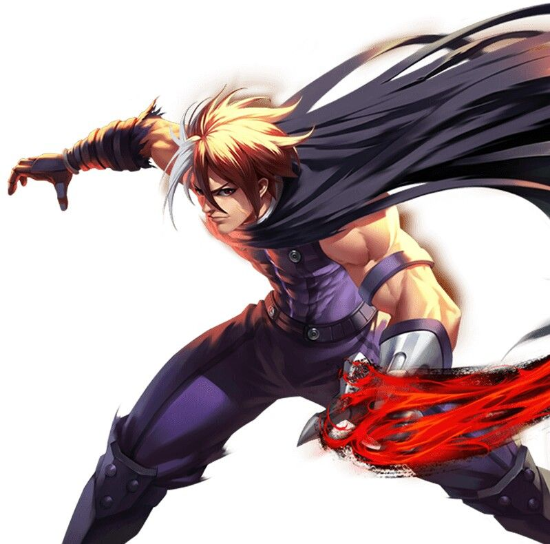
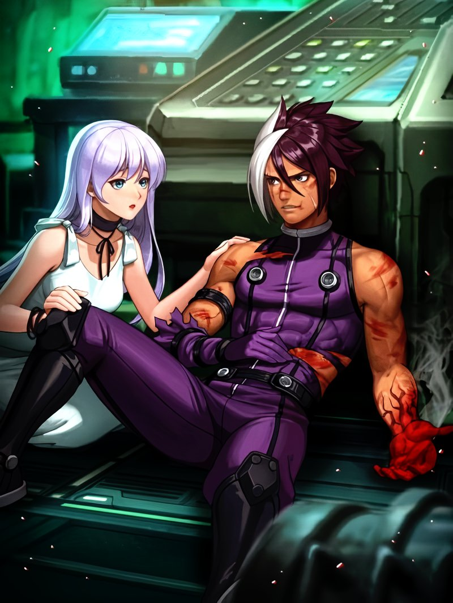
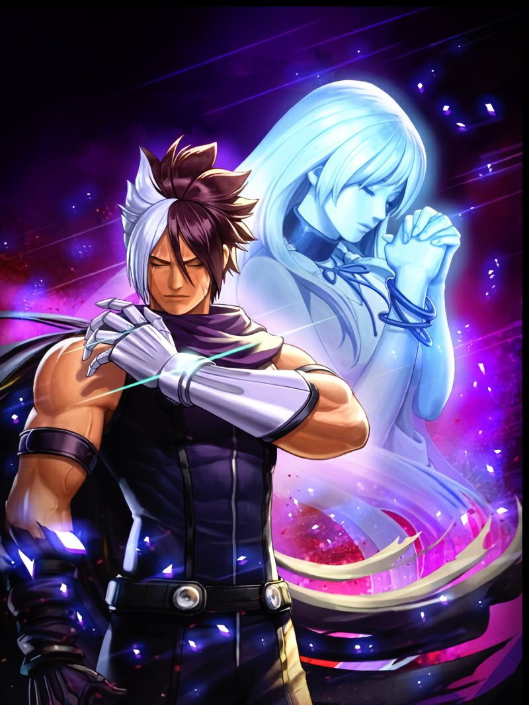
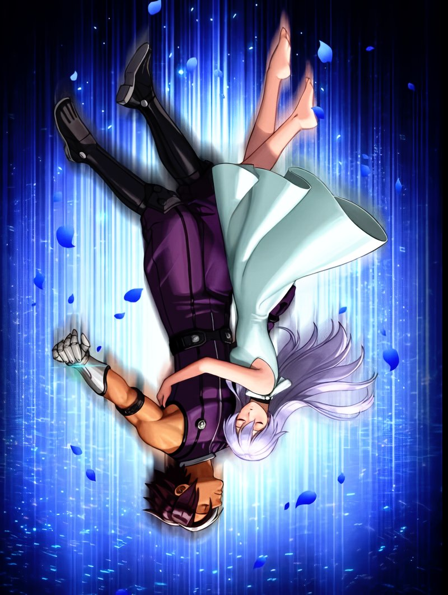
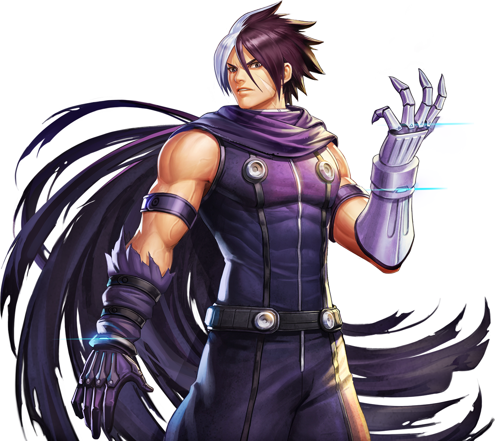
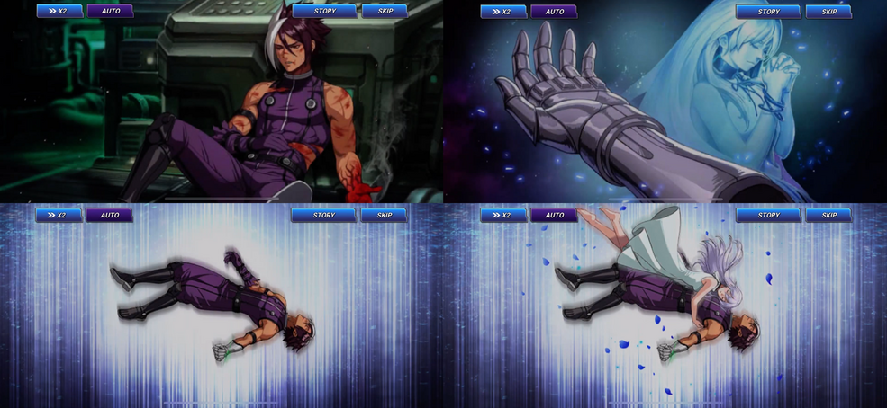

Story
Nameless (ネームレス) is a character in The King of Fighters series. He debuts as a single entry fighter in The King of Fighters 2002 Unlimited Match. He is voiced by Daisuke Ono.
Nameless' storyline is similar in premise to K9999, but he does not rebel against the organization. As a result, he does not betray the organization, nor does he interact with Ángel, acting alone. His hope of reviving Isolde is his reason for his loyalty to NESTS, but apparently, he does not exactly share the organization's goals.
Nameless is the 9.999th K' clone and the only survivor of "Project Ж". He is known by NESTS by his codename "Ж'" or "Zhe Prime". For as long as he can remember, he knew only pain and suffering as a test experiment. He and his "brothers" (other clones dubbed as "K' children") were tested to see how normal DNA could withstand the Kusanagi DNA due to their unprecedented success with K'. Most of his brothers either exploded or suffered from severe burns from the genetic mutation. Nameless himself has come close to death at least 180 times. Eventually, the scientists learned that it required strong will power to keep the flame in check and focused on painful endurance tests.
Nameless lived a miserable existence until he spotted a beautiful yet sad girl named Isolde. Whenever he was badly injured, he would see her near the infirmary. Though he was usually too wounded to speak to her, he fell in love with her. The thought of one day being with her kept him alive through his merciless training and experiments. Once the laboratory members deemed him fit to wield the Kusanagi flame, his custom glove was grafted onto his left arm. The glove is meant to enhance his strength of will, which would theoretically make him as adept as Kyo. A similar glove design was originally planned for K' but he left before it could be used on him.
After the final testing with his glove was complete, he was sent to earth to test his combat capabilities. He unintentionally killed a woman by merely tapping her shoulder. Impressed by the results, he became an assassin for NESTS. On one of his assignments, he cornered a man who was trying to escape from the syndicate. In a bid to spare his life, the escapee confessed the truth behind Isolde.
She was a part of the Anti K' Project and was given the power to control ice. However, her abilities were deemed to be inadequate until she saw Nameless. Seeing the connection between the two subjects, NESTS allowed the two to routinely see one another to bring out their full potential. Regrettably, Isolde died from her testing. Rather than waste her progress, NESTS crafted her DNA into Nameless's glove. Her abilities keep the flames pacified until needed for use.
Nameless doesn't know if he should believe the man, but he realizes that his words have weight to them. He hasn't seen Isolde since he received his glove. Not wanting to risk losing Isolde, he unquestionably follows any orders he's given by NESTS. He hopes to one day return her to her rightful body.
Development
He was made to replace K9999 in the lineup, presumably due to the copyright issues surrounding his character. Ureshino comments on his personal blog that other key concepts for Nameless were "ninja" and "immediate reaction".
Personality
A tragic young man who wishes only to be with his beloved. He locked away his emotions to follow his creators' orders without question with the hope that he can resurrect his lover. In his special intro with Kula Diamond, he mistakes her for Isolde. As such, he's much more subdued, subservient and sentimental than his predecessor. However, he can sometimes slip into anger, such as with his special intro against K' and Kyo, eager to prove his power to his progenitors.
  Power
Pyrokinesis - Due to him containing Kusanagi DNA, he can manipulate genetically altered blood-colored flames. Unlike Kyo, Iori or K', who can generate them in thin air, Nameless has to remove his glove to use the fire.
Flame Pillar - He can create a pillar of fire around himself that covers a large proximity area. Doing so leaves him very fatigued afterward. It is said that a woman appears when he uses this technique...
Flame Shield - Nameless can create a dome-like shield around himself made entirely of fire.
Flame Thrower - Nameless can fire several bursts of fire at once.
Flame Wave - Nameless can create an angled wave of flame in close proximity.
Polymorphic Ice Glove - Crafted using Isolde's DNA, the glove keeps his flames pacified due to Isolde being a part of the Anti-K' project.
Projection - Isolde, channeled through the glove, can appear when Nameless unleashes his full power. Whether this is an astral or holographic projection remains unknown.
Morph - This glove can change into any shape of any size.
Skills
Superhuman Endurance - As the survivor of many experiments focused on pain, Nameless has built great endurance to great levels.
Assassination - With his newfound power, he eliminates targets efficiently
Fighting Style
His fighting style is roughly the same as K9999's, with the exception of several aesthetic changes. He relies more on pure instinct and less on his glove, and overall, focuses much more on his flames via removing his glove for brief moments just to access them for a singular attack. All of his techniques are written in the usual technique-name format as opposed to the quote style K9999 uses, albeit with fairly long and methodical names.
Gameplay-wise, he is much more powerful than his predecessor, considered a top-tier character, along with K' and Kasumi Todoh. His moves make use of the infamous pretzel motion most famously used in Geese Howard's Raging Storm.
Trivia
In a new story for The King of Fighters 2002 added in the mobile game The King of Fighters All Star, Nameless dies after saving Kaya (a NPC of the game) and the player in a mission, choosing to stay behind on the self-destructing Deimos' base to ensure the destruction of NESTS after realizing that nothing made sense without his beloved Isolde by his side. This lore was added during the event "BOSS SYNDROME Nameless & Dark Ash", and is important to note that Netmarble themselves don't consider this take to be canon since it lacks the direct involvement of SNK themselves.
Nameless, Krohnen and K9999 share the same blood type, all primarily inherited from Kyo Kusanagi.However, only Nameless has the RH factor (negative) present in Kyo's blood. K9999 and Krohnen also share the same type of favorite food (peanuts and nuts are part of a same family [nuts]).
Unlike K9999 who is Kyo's 9999th clone, Nameless is the 9999th clone of K' and as the ultimate NESTS experiment he was also given Kyo's genes. This mix of both Kyo and K' is the reason he has a streak of white hair and his flames are a lot stronger and crimson.